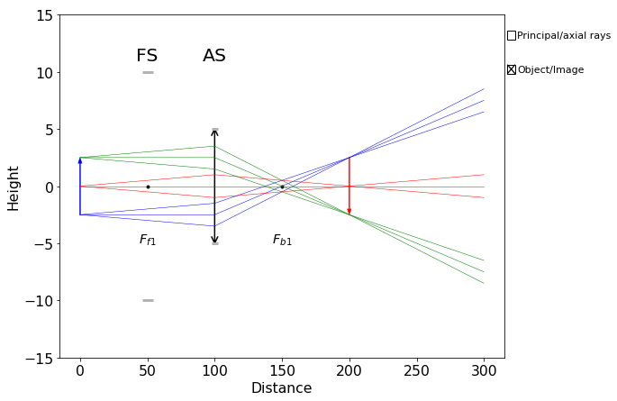
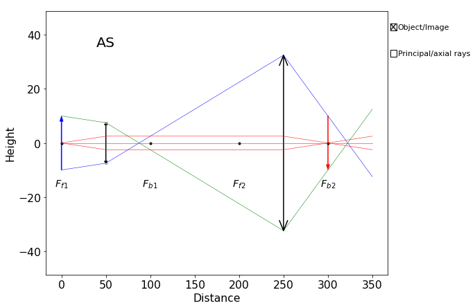
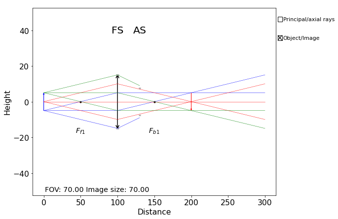

import numpy as np
import matplotlib.pyplot as pltGeneral Workflow
# Install raytracing module using pip
!pip install raytracingCollecting raytracing
Downloading raytracing-1.3.7-py3-none-any.whl (1.6 MB)
|▏ | 10 kB 15.9 MB/s eta 0:00:01 |▍ | 20 kB 16.0 MB/s eta 0:00:01 |▋ | 30 kB 18.8 MB/s eta 0:00:01 |▉ | 40 kB 14.7 MB/s eta 0:00:01 |█ | 51 kB 14.3 MB/s eta 0:00:01 |█▏ | 61 kB 15.5 MB/s eta 0:00:01 |█▍ | 71 kB 14.7 MB/s eta 0:00:01 |█▋ | 81 kB 15.9 MB/s eta 0:00:01 |█▉ | 92 kB 15.2 MB/s eta 0:00:01 |██ | 102 kB 16.2 MB/s eta 0:00:01 |██▎ | 112 kB 16.2 MB/s eta 0:00:01 |██▍ | 122 kB 16.2 MB/s eta 0:00:01 |██▋ | 133 kB 16.2 MB/s eta 0:00:01 |██▉ | 143 kB 16.2 MB/s eta 0:00:01 |███ | 153 kB 16.2 MB/s eta 0:00:01 |███▎ | 163 kB 16.2 MB/s eta 0:00:01 |███▍ | 174 kB 16.2 MB/s eta 0:00:01 |███▋ | 184 kB 16.2 MB/s eta 0:00:01 |███▉ | 194 kB 16.2 MB/s eta 0:00:01 |████ | 204 kB 16.2 MB/s eta 0:00:01 |████▎ | 215 kB 16.2 MB/s eta 0:00:01 |████▌ | 225 kB 16.2 MB/s eta 0:00:01 |████▋ | 235 kB 16.2 MB/s eta 0:00:01 |████▉ | 245 kB 16.2 MB/s eta 0:00:01 |█████ | 256 kB 16.2 MB/s eta 0:00:01 |█████▎ | 266 kB 16.2 MB/s eta 0:00:01 |█████▌ | 276 kB 16.2 MB/s eta 0:00:01 |█████▊ | 286 kB 16.2 MB/s eta 0:00:01 |█████▉ | 296 kB 16.2 MB/s eta 0:00:01 |██████ | 307 kB 16.2 MB/s eta 0:00:01 |██████▎ | 317 kB 16.2 MB/s eta 0:00:01 |██████▌ | 327 kB 16.2 MB/s eta 0:00:01 |██████▊ | 337 kB 16.2 MB/s eta 0:00:01 |██████▉ | 348 kB 16.2 MB/s eta 0:00:01 |███████ | 358 kB 16.2 MB/s eta 0:00:01 |███████▎ | 368 kB 16.2 MB/s eta 0:00:01 |███████▌ | 378 kB 16.2 MB/s eta 0:00:01 |███████▊ | 389 kB 16.2 MB/s eta 0:00:01 |████████ | 399 kB 16.2 MB/s eta 0:00:01 |████████ | 409 kB 16.2 MB/s eta 0:00:01 |████████▎ | 419 kB 16.2 MB/s eta 0:00:01 |████████▌ | 430 kB 16.2 MB/s eta 0:00:01 |████████▊ | 440 kB 16.2 MB/s eta 0:00:01 |█████████ | 450 kB 16.2 MB/s eta 0:00:01 |█████████▏ | 460 kB 16.2 MB/s eta 0:00:01 |█████████▎ | 471 kB 16.2 MB/s eta 0:00:01 |█████████▌ | 481 kB 16.2 MB/s eta 0:00:01 |█████████▊ | 491 kB 16.2 MB/s eta 0:00:01 |██████████ | 501 kB 16.2 MB/s eta 0:00:01 |██████████▏ | 512 kB 16.2 MB/s eta 0:00:01 |██████████▎ | 522 kB 16.2 MB/s eta 0:00:01 |██████████▌ | 532 kB 16.2 MB/s eta 0:00:01 |██████████▊ | 542 kB 16.2 MB/s eta 0:00:01 |███████████ | 552 kB 16.2 MB/s eta 0:00:01 |███████████▏ | 563 kB 16.2 MB/s eta 0:00:01 |███████████▍ | 573 kB 16.2 MB/s eta 0:00:01 |███████████▌ | 583 kB 16.2 MB/s eta 0:00:01 |███████████▊ | 593 kB 16.2 MB/s eta 0:00:01 |████████████ | 604 kB 16.2 MB/s eta 0:00:01 |████████████▏ | 614 kB 16.2 MB/s eta 0:00:01 |████████████▍ | 624 kB 16.2 MB/s eta 0:00:01 |████████████▌ | 634 kB 16.2 MB/s eta 0:00:01 |████████████▊ | 645 kB 16.2 MB/s eta 0:00:01 |█████████████ | 655 kB 16.2 MB/s eta 0:00:01 |█████████████▏ | 665 kB 16.2 MB/s eta 0:00:01 |█████████████▍ | 675 kB 16.2 MB/s eta 0:00:01 |█████████████▋ | 686 kB 16.2 MB/s eta 0:00:01 |█████████████▊ | 696 kB 16.2 MB/s eta 0:00:01 |██████████████ | 706 kB 16.2 MB/s eta 0:00:01 |██████████████▏ | 716 kB 16.2 MB/s eta 0:00:01 |██████████████▍ | 727 kB 16.2 MB/s eta 0:00:01 |██████████████▋ | 737 kB 16.2 MB/s eta 0:00:01 |██████████████▉ | 747 kB 16.2 MB/s eta 0:00:01 |███████████████ | 757 kB 16.2 MB/s eta 0:00:01 |███████████████▏ | 768 kB 16.2 MB/s eta 0:00:01 |███████████████▍ | 778 kB 16.2 MB/s eta 0:00:01 |███████████████▋ | 788 kB 16.2 MB/s eta 0:00:01 |███████████████▉ | 798 kB 16.2 MB/s eta 0:00:01 |████████████████ | 808 kB 16.2 MB/s eta 0:00:01 |████████████████▏ | 819 kB 16.2 MB/s eta 0:00:01 |████████████████▍ | 829 kB 16.2 MB/s eta 0:00:01 |████████████████▋ | 839 kB 16.2 MB/s eta 0:00:01 |████████████████▉ | 849 kB 16.2 MB/s eta 0:00:01 |█████████████████ | 860 kB 16.2 MB/s eta 0:00:01 |█████████████████▏ | 870 kB 16.2 MB/s eta 0:00:01 |█████████████████▍ | 880 kB 16.2 MB/s eta 0:00:01 |█████████████████▋ | 890 kB 16.2 MB/s eta 0:00:01 |█████████████████▉ | 901 kB 16.2 MB/s eta 0:00:01 |██████████████████ | 911 kB 16.2 MB/s eta 0:00:01 |██████████████████▎ | 921 kB 16.2 MB/s eta 0:00:01 |██████████████████▍ | 931 kB 16.2 MB/s eta 0:00:01 |██████████████████▋ | 942 kB 16.2 MB/s eta 0:00:01 |██████████████████▉ | 952 kB 16.2 MB/s eta 0:00:01 |███████████████████ | 962 kB 16.2 MB/s eta 0:00:01 |███████████████████▎ | 972 kB 16.2 MB/s eta 0:00:01 |███████████████████▍ | 983 kB 16.2 MB/s eta 0:00:01 |███████████████████▋ | 993 kB 16.2 MB/s eta 0:00:01 |███████████████████▉ | 1.0 MB 16.2 MB/s eta 0:00:01 |████████████████████ | 1.0 MB 16.2 MB/s eta 0:00:01 |████████████████████▎ | 1.0 MB 16.2 MB/s eta 0:00:01 |████████████████████▌ | 1.0 MB 16.2 MB/s eta 0:00:01 |████████████████████▋ | 1.0 MB 16.2 MB/s eta 0:00:01 |████████████████████▉ | 1.1 MB 16.2 MB/s eta 0:00:01 |█████████████████████ | 1.1 MB 16.2 MB/s eta 0:00:01 |█████████████████████▎ | 1.1 MB 16.2 MB/s eta 0:00:01 |█████████████████████▌ | 1.1 MB 16.2 MB/s eta 0:00:01 |█████████████████████▋ | 1.1 MB 16.2 MB/s eta 0:00:01 |█████████████████████▉ | 1.1 MB 16.2 MB/s eta 0:00:01 |██████████████████████ | 1.1 MB 16.2 MB/s eta 0:00:01 |██████████████████████▎ | 1.1 MB 16.2 MB/s eta 0:00:01 |██████████████████████▌ | 1.1 MB 16.2 MB/s eta 0:00:01 |██████████████████████▊ | 1.1 MB 16.2 MB/s eta 0:00:01 |██████████████████████▉ | 1.2 MB 16.2 MB/s eta 0:00:01 |███████████████████████ | 1.2 MB 16.2 MB/s eta 0:00:01 |███████████████████████▎ | 1.2 MB 16.2 MB/s eta 0:00:01 |███████████████████████▌ | 1.2 MB 16.2 MB/s eta 0:00:01 |███████████████████████▊ | 1.2 MB 16.2 MB/s eta 0:00:01 |████████████████████████ | 1.2 MB 16.2 MB/s eta 0:00:01 |████████████████████████ | 1.2 MB 16.2 MB/s eta 0:00:01 |████████████████████████▎ | 1.2 MB 16.2 MB/s eta 0:00:01 |████████████████████████▌ | 1.2 MB 16.2 MB/s eta 0:00:01 |████████████████████████▊ | 1.2 MB 16.2 MB/s eta 0:00:01 |█████████████████████████ | 1.3 MB 16.2 MB/s eta 0:00:01 |█████████████████████████ | 1.3 MB 16.2 MB/s eta 0:00:01 |█████████████████████████▎ | 1.3 MB 16.2 MB/s eta 0:00:01 |█████████████████████████▌ | 1.3 MB 16.2 MB/s eta 0:00:01 |█████████████████████████▊ | 1.3 MB 16.2 MB/s eta 0:00:01 |██████████████████████████ | 1.3 MB 16.2 MB/s eta 0:00:01 |██████████████████████████▏ | 1.3 MB 16.2 MB/s eta 0:00:01 |██████████████████████████▎ | 1.3 MB 16.2 MB/s eta 0:00:01 |██████████████████████████▌ | 1.3 MB 16.2 MB/s eta 0:00:01 |██████████████████████████▊ | 1.4 MB 16.2 MB/s eta 0:00:01 |███████████████████████████ | 1.4 MB 16.2 MB/s eta 0:00:01 |███████████████████████████▏ | 1.4 MB 16.2 MB/s eta 0:00:01 |███████████████████████████▍ | 1.4 MB 16.2 MB/s eta 0:00:01 |███████████████████████████▌ | 1.4 MB 16.2 MB/s eta 0:00:01 |███████████████████████████▊ | 1.4 MB 16.2 MB/s eta 0:00:01 |████████████████████████████ | 1.4 MB 16.2 MB/s eta 0:00:01 |████████████████████████████▏ | 1.4 MB 16.2 MB/s eta 0:00:01 |████████████████████████████▍ | 1.4 MB 16.2 MB/s eta 0:00:01 |████████████████████████████▌ | 1.4 MB 16.2 MB/s eta 0:00:01 |████████████████████████████▊ | 1.5 MB 16.2 MB/s eta 0:00:01 |█████████████████████████████ | 1.5 MB 16.2 MB/s eta 0:00:01 |█████████████████████████████▏ | 1.5 MB 16.2 MB/s eta 0:00:01 |█████████████████████████████▍ | 1.5 MB 16.2 MB/s eta 0:00:01 |█████████████████████████████▋ | 1.5 MB 16.2 MB/s eta 0:00:01 |█████████████████████████████▊ | 1.5 MB 16.2 MB/s eta 0:00:01 |██████████████████████████████ | 1.5 MB 16.2 MB/s eta 0:00:01 |██████████████████████████████▏ | 1.5 MB 16.2 MB/s eta 0:00:01 |██████████████████████████████▍ | 1.5 MB 16.2 MB/s eta 0:00:01 |██████████████████████████████▋ | 1.5 MB 16.2 MB/s eta 0:00:01 |██████████████████████████████▊ | 1.6 MB 16.2 MB/s eta 0:00:01 |███████████████████████████████ | 1.6 MB 16.2 MB/s eta 0:00:01 |███████████████████████████████▏| 1.6 MB 16.2 MB/s eta 0:00:01 |███████████████████████████████▍| 1.6 MB 16.2 MB/s eta 0:00:01 |███████████████████████████████▋| 1.6 MB 16.2 MB/s eta 0:00:01 |███████████████████████████████▉| 1.6 MB 16.2 MB/s eta 0:00:01 |████████████████████████████████| 1.6 MB 16.2 MB/s eta 0:00:01 |████████████████████████████████| 1.6 MB 16.2 MB/s
Requirement already satisfied: numpy in /usr/local/lib/python3.7/dist-packages (from raytracing) (1.19.5)
Requirement already satisfied: matplotlib>=3 in /usr/local/lib/python3.7/dist-packages (from raytracing) (3.2.2)
Requirement already satisfied: pygments in /usr/local/lib/python3.7/dist-packages (from raytracing) (2.6.1)
Requirement already satisfied: kiwisolver>=1.0.1 in /usr/local/lib/python3.7/dist-packages (from matplotlib>=3->raytracing) (1.3.2)
Requirement already satisfied: pyparsing!=2.0.4,!=2.1.2,!=2.1.6,>=2.0.1 in /usr/local/lib/python3.7/dist-packages (from matplotlib>=3->raytracing) (3.0.7)
Requirement already satisfied: python-dateutil>=2.1 in /usr/local/lib/python3.7/dist-packages (from matplotlib>=3->raytracing) (2.8.2)
Requirement already satisfied: cycler>=0.10 in /usr/local/lib/python3.7/dist-packages (from matplotlib>=3->raytracing) (0.11.0)
Requirement already satisfied: six>=1.5 in /usr/local/lib/python3.7/dist-packages (from python-dateutil>=2.1->matplotlib>=3->raytracing) (1.15.0)
Installing collected packages: raytracing
Successfully installed raytracing-1.3.7from raytracing import *The general workflow for simulating an optical system is as follows: 1. Create the ImagingPath() object 2. Create an ObjectRays() object with desired parameters (e.g., number of rays, angular range, etc.) 3. Add optical components to the imaging path 4. Display the path, making sure to pass the rays object to the display function 5. Print out any desired information about the imaging path using the appropriate methods of the ImagingPath object. See documentation on ImagingPath here for details.
# Create imaging path object
path = ImagingPath()
# Create rays object
# Here we have set:
# - The diameter of the object to 6
# - the half angle to 0.01 rad
# - the number of point sources or the number of ray fans (H) to 3
# - the number of rays in each ray fan (T) to 3
objRays = ObjectRays(diameter=5, halfAngle=0.01, H=3, T=3)
# Add/append objects to the imaging path. Use Space() to generate a gap between objects
path.append(Space(d=50))
path.append(Aperture(diameter=20))
path.append(Space(d=50,n=3))
path.append(Lens(f=50, diameter=10))
path.append(Space(d=200))
path.display(rays=objRays, removeBlocked=False, limitObjectToFieldOfView=False)
# Print out desired information about the optical system
print(path.fieldOfView())
print(f"Image size is {path.imageSize(useObject=True)}")
39.99999692719027
Image size is 10.01 Helpful Notes
- Read the documentation thoroughly if you have questions!
- Rays which are blocked as they pass through the imaging system and don’t contribute to the final image are left off the displayed diagram by default. To change this, pass the argument
removeBlocked=Falseto the display() method of the ImagingPath object.
path = ImagingPath()
objRays = ObjectRays(diameter=20, halfAngle=0.05, H=3, T=3)
path.append(Space(d=50))
path.append(Lens(f=50, diameter=15))
path.append(Space(d=200))
path.append(Lens(f=50))
path.append(Space(d=100))
path.display(rays=objRays)
/usr/local/lib/python3.7/dist-packages/raytracing/figure.py: 117
BeginnerHint: Infinite field of view: cannot use limitObjectToFieldOfView=True. The object height is instead set to the default value of 10.0.
/usr/local/lib/python3.7/dist-packages/raytracing/imagingpath.py: 797
BeginnerHint: Field of view is infinite. You can pass useObject=True to use the finite objectHeight.
/usr/local/lib/python3.7/dist-packages/raytracing/figure.py: 134
BeginnerHint: No aperture stop in the system: cannot use onlyPrincipalAndAxialRays=True since they are not defined. Showing the default ObjectRays instead. 
path = ImagingPath()
#rays = UniformRays(yMax=10,M=3,N=3)
rays = ObjectRays(diameter=10, halfAngle=0.1)
path.append(Space(d=100))
path.append(Lens(f=50, diameter=30))
path.append(Space(d=30))
path.append(Aperture(diameter=15))
path.append(Space(d=170))
path.display(rays,removeBlocked=False)
print(path.NA())
0.1069379820609651